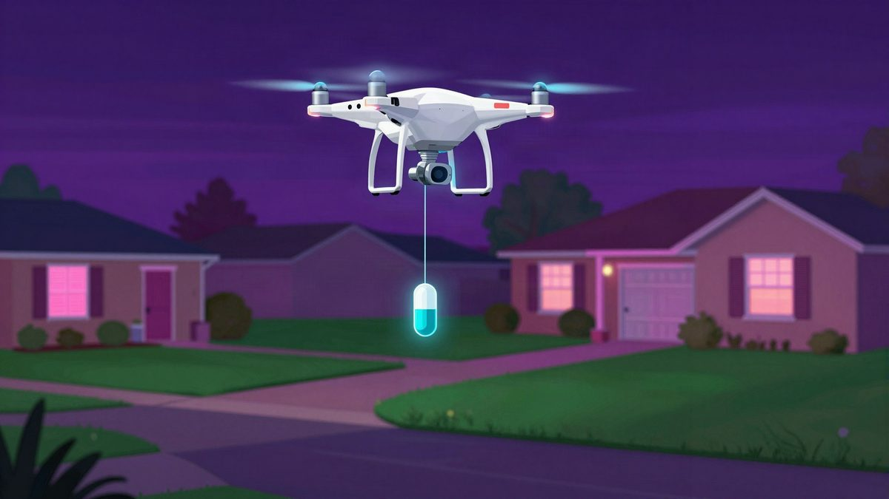
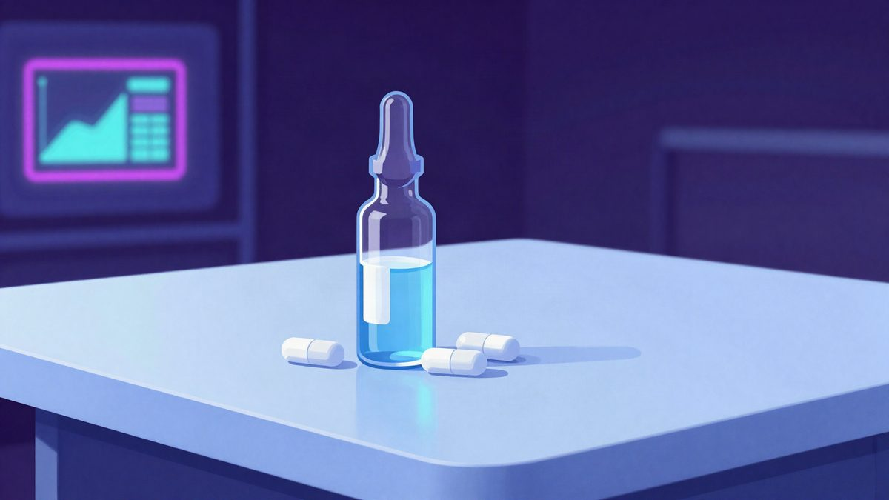
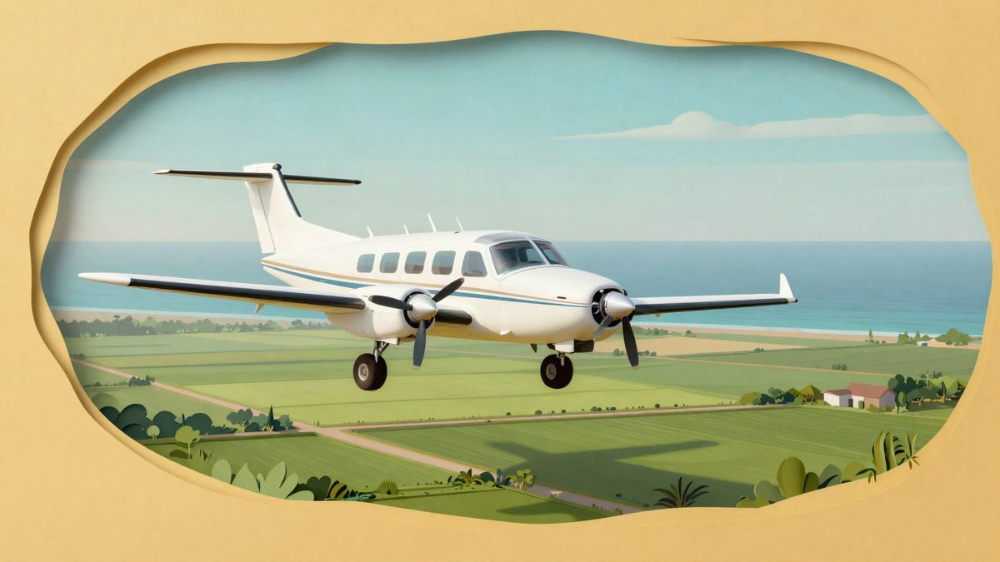

Uber Eats počeo dostavu dronovima u Teksasu, cilj je milijun dostava dnevno do 2029.

Uber Eats je u Springu kraj Houstona pokrenuo dostavu hrane dronovima tvrtke Zipline. Sljedeći je Dallas, a Uber do 2029. cilja milijun dostava dronovima dnevno. Planovi za Europu nisu poznati.
Uber Eats je danas pokrenuo dostavu dronovima u Springu, predgrađu Houstona u Teksasu. Hranu iz aplikacije sada može dostaviti Ziplineov dron. Sljedeći je Dallas, a nakon njega Uber planira desetke gradova u SAD-u. Do 2029. cilja na milijun dostava dronovima dnevno.
Ziplineovi dronovi nose narudžbe teške do osam funti (oko 3,6 kilograma) i lete do 10 milja (oko 16 kilometara) od restorana. Uber tvrdi da lete i po kiši i lošem vremenu, brzinom do 70 milja na sat (oko 113 km/h).
Dron ne slijeće kod kupca. Paket spušta u posebnoj kapsuli s visine veće od 300 stopa (oko 90 metara) i ostavlja ga u dvorištu ili na prilazu. Prema Uberu, dronovi biraju najtiše moguće putanje, ovisno o vjetru, brzini i visini leta.
Kako naručiti
Na početnoj stranici aplikacije Uber Eats nalazi se posebna ikona koja prikazuje restorane s dostavom dronom. U području Houstona to su lanci poput Jersey Mike'sa i Zaxby'sa te lokalni restorani. Za početak dostava radi od 8 do 22 sata.
Nakon odabira jela biraš mjesto na koje će se paket spustiti, a dron možeš pratiti u stvarnom vremenu. Uber kaže da napojnica nije potrebna i da nema dodatnih naknada.
Konkurencija
DoorDash već dostavlja dronovima u dijelovima područja Dallas-Fort Worth i u Charlotteu u Sjevernoj Karolini, preko partnera Wing, Flytrex i Manna. Razvija i vlastite dronove, a s njima će dostavu prvo pokrenuti u sjevernoj Kaliforniji.
Izvor: Engadget
Povezani članci
 Humanoidni robot Howl uči skupljati jaja s poda peradarnika, NC State cilja na 2027.17. studenoga 2026.
Humanoidni robot Howl uči skupljati jaja s poda peradarnika, NC State cilja na 2027.17. studenoga 2026.
Sveučilište u Hong Kongu razvilo je oralni lijek s arsenom za leukemiju, preživljenje preko 97 posto16. studenoga 2026.
COMAC CE-25A prvi je put poletio s pilotom: električni zrakoplov za 19 putnika14. studenoga 2026.